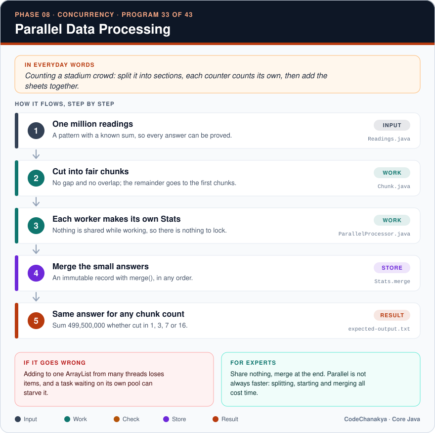

Phase 08 · Concurrency · Program 33 of 43
Parallel Data Processing
The problem
A million sensor readings must be summarised. One thread does it in one pass; with several cores the work can be cut into pieces done at the same time, and the small answers merged.
The better design shares nothing while working: each chunk builds its own immutable Stats and the main thread merges them. Every figure can be proved by arithmetic, so a wrong parallel answer cannot hide.
See the flow
The whole program as one picture. Read it top to bottom; the colour of each card says what kind of step it is.


If you are new to coding
Counting a stadium crowd: split it into sections, each counter counts its own, then add the sheets together.
If you are learning
Follow the numbered cards from top to bottom. Open the file named on each card, run the program, and match its output to the last card.
If you are experienced
Share nothing, merge at the end. Parallel is not always faster: splitting, starting and merging all cost time.
Text version of the flow
- One million readings (input): A pattern with a known sum, so every answer can be proved.
- Cut into fair chunks (work): No gap and no overlap; the remainder goes to the first chunks.
- Each worker makes its own Stats (work): Nothing is shared while working, so there is nothing to lock.
- Merge the small answers (store): An immutable record with merge(), in any order.
- Same answer for any chunk count (result): Sum 499,500,000 whether cut in 1, 3, 7 or 16.
Read in this order
- 1Readings.javaA pattern with a known sum.
- 2Stats.java, Chunk.javaAn immutable record with merge, and fair splitting.
- 3ParallelProcessor.javaTickets out, answers merged.
- 4SharedTotals.javaThree ways to total on four threads.
The code
package com.codechanakya.parallel; /** * What we want to know about a stretch of readings. * * <p>The record is immutable and has a {@link #merge} method that joins two answers into one. That * pair of ideas is what makes parallel work easy: each thread builds its own {@code Stats} from * its own part of the data, with nothing shared and nothing to lock, and the main thread merges * the small results afterwards. * * @param count how many readings were looked at * @param sum their total * @param high how many were above {@link #HIGH_LIMIT} * @param max the largest one */ public record Stats(long count, long sum, long high, int max) { /** A reading above this counts as "high". */ public static final int HIGH_LIMIT = 900; /** The answer for no readings at all. Merging it with anything changes nothing. */ public static final Stats EMPTY = new Stats(0, 0, 0, Integer.MIN_VALUE); /** * Works through {@code data[from, to)}. * * @throws IllegalStateException if a reading is negative, which no sensor should produce */ public static Stats of(int[] data, int from, int to) { long sum = 0; long high = 0; int max = Integer.MIN_VALUE; for (int i = from; i < to; i++) { int reading = data[i]; if (reading < 0) { throw new IllegalStateException("Bad reading " + reading + " at position " + i); } sum += reading; if (reading > HIGH_LIMIT) { high++; } max = Math.max(max, reading); } return new Stats(to - from, sum, high, max); } /** Joins two answers. The order does not matter, which is why chunks may finish in any order. */ public Stats merge(Stats other) { return new Stats(count + other.count, sum + other.sum, high + other.high, Math.max(max, other.max)); } /** One line for the console. */ public String describe() { return count + " readings, sum " + sum + ", " + high + " above " + HIGH_LIMIT + ", highest " + max; } }
package com.codechanakya.parallel; import java.util.ArrayList; import java.util.List; import java.util.concurrent.Callable; import java.util.concurrent.ExecutionException; import java.util.concurrent.ExecutorService; import java.util.concurrent.Executors; import java.util.concurrent.Future; import java.util.concurrent.TimeUnit; /** * Splits the data into chunks, gives each chunk to a worker, and merges the answers. * * <p>This is the "fork and join" idea in its plainest form. It is safe without a single lock * because of three habits: * <ol> * <li>the data array is only <em>read</em> once the workers have it;</li> * <li>every worker builds its own {@link Stats} and shares nothing while it works;</li> * <li>the results are combined on one thread, after the workers hand them back.</li> * </ol> */ public final class ParallelProcessor implements AutoCloseable { private final ExecutorService pool; public ParallelProcessor(int threads) { this.pool = Executors.newFixedThreadPool(threads); } /** The plain loop on the calling thread. The answer everything else is compared with. */ public static Stats sequential(int[] data) { return Stats.of(data, 0, data.length); } /** Hands out one task per chunk and returns the tickets without waiting. */ public List<Future<Stats>> submit(int[] data, int chunks) { List<Future<Stats>> tickets = new ArrayList<>(); for (Chunk chunk : Chunk.split(data.length, chunks)) { Callable<Stats> task = () -> Stats.of(data, chunk.from(), chunk.to()); tickets.add(pool.submit(task)); } return tickets; } /** * Processes the data in {@code chunks} pieces and returns the merged answer. * * @throws ExecutionException if any chunk failed; the cause says why */ public Stats process(int[] data, int chunks) throws InterruptedException, ExecutionException { Stats total = Stats.EMPTY; for (Future<Stats> ticket : submit(data, chunks)) { total = total.merge(ticket.get()); // waits for this chunk, then folds it in } return total; } /** The pool, for the demonstration of waiting with a deadline. */ ExecutorService pool() { return pool; } @Override public void close() { pool.shutdown(); try { if (!pool.awaitTermination(5, TimeUnit.SECONDS)) { pool.shutdownNow(); } } catch (InterruptedException e) { pool.shutdownNow(); Thread.currentThread().interrupt(); } } }
Only the key files are shown. The rest are in the repository.
Run it
$ ./run.sh --check
--- The data ---
1000000 readings, the first five are [7, 38, 69, 100, 131]
Every block of 1000 holds each value from 0 to 999 once, so the sum should be 1000 x 499500.
--- One thread, the plain loop ---
1000000 readings, sum 499500000, 99000 above 900, highest 999
--- Cutting the work into chunks ---
1,000,000 in 4 : [Chunk[from=0, to=250000], Chunk[from=250000, to=500000], Chunk[from=500000, to=750000], Chunk[from=750000, to=1000000]]
10 in 3 : [Chunk[from=0, to=4], Chunk[from=4, to=7], Chunk[from=7, to=10]] (the remainder goes to the first chunks)
--- Four workers, four tickets ---
Tickets handed out: 4
Chunk 1: 250000 readings, sum 124875000, 24750 above 900, highest 999
Chunk 2: 250000 readings, sum 124875000, 24750 above 900, highest 999
Chunk 3: 250000 readings, sum 124875000, 24750 above 900, highest 999
Chunk 4: 250000 readings, sum 124875000, 24750 above 900, highest 999
Merged: 1000000 readings, sum 499500000, 99000 above 900, highest 999
Same as the single thread: true
--- Does the number of chunks change the answer? ---
1 chunks: sum 499500000
2 chunks: sum 499500000
3 chunks: sum 499500000
7 chunks: sum 499500000
16 chunks: sum 499500000
Every answer equals the baseline: true
--- Parallel streams do the chunking for you ---
parallel sum equals the baseline: true
Readings per band of 100: {0=100000, 1=100000, 2=100000, 3=100000, 4=100000, 5=100000, 6=100000, 7=100000, 8=100000, 9=100000}
The result is the same however the threads were scheduled; only the speed changes.
--- Three ways to share a total ---
one AtomicLong : 499500000
one LongAdder : 499500000
private totals : 499500000
All equal the baseline: true
--- Waiting with a deadline ---
Gave up after 100 ms: TimeoutException
cancel(true) returned true
--- One bad reading in the data ---
Chunk 1: ok, 250000 readings
Chunk 2: ok, 250000 readings
Chunk 3: failed. Bad reading -1 at position 600000
Chunk 4: ok, 250000 readings
Only the chunk that held the bad reading failed.
OK: output matches expected-output.txt
This is the real output from OpenJDK 21.0.13 on Linux. It has not yet been run on Java 25, Windows or macOS.
Try it yourself
- BeginnerCount readings above 950.
- BeginnerFind the smallest reading.
- BeginnerPrint the average.
- IntermediateA histogram from private arrays.
- IntermediateCancel everything on the first failure.
- ChallengeMaximum with a RecursiveTask.
Hints and solutions are in the exercises and solutions folders. Try first.
Break it on purpose
Three files: adding to one ArrayList from many threads, a pool that starves itself, and unhandled Future.get() exceptions. The README in the broken folder explains each one.